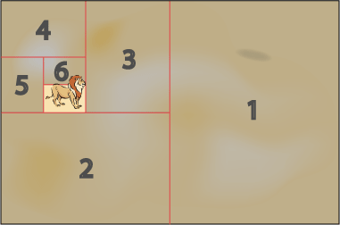

Метод дихотомии
Ловля льва методом дихотомии основана на последовательном делении пустыни на две части. Вначале разбиваем пустыню пополам, как показано на рис. 1, после чего отбрасываем ту часть пустыни, где льва нет (на иллюстрации она помечена темным цветом).

Рис. 1. Первый этап метода дихотомии
На следующем шаге оставшуюся часть снова делим пополам, но уже горизонтально, при этом отбрасывая часть пустыни, где льва нет (рис. 2).

Рис. 2. Второй этап метода дихотомии
Последовательное деление пустыни по вертикали и горизонтали продолжается до тех пор, пока оставшаяся часть по размерам не будет сопоставима с размерами клетки. Остается только накрыть полученный участок клеткой и лев окажется пойман.
На рис. 3 показаны итерации ловли льва методом дихотомии.

Рис. 3. Количество итераций